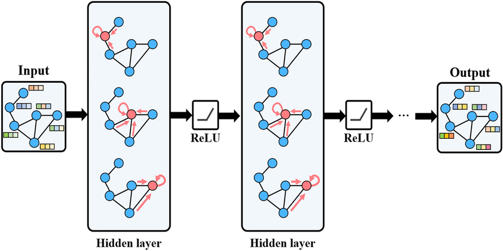
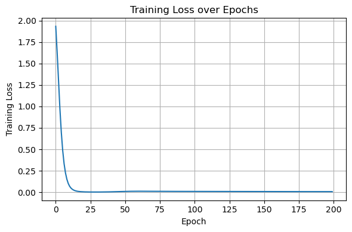

Spectral Graph Convolution in GNNs#
Steps are:
Transform signal to Fourier domain: \(U^\top x\)
Apply spectral filter: \(g_\theta(\Lambda)\)
Transform back: \(U g_\theta(\Lambda) U^\top x\)
Challenges:
Eigen-decomposition costs \(O(n^3)\)
Filters depend on graph → not transferable
Not scalable for large graphs
Chebyshev Polynomial Filters#
Avoid eigen-decomposition:
Efficient, scalable, no eigenvectors required
GCN as First-Order Approximation#
Kipf & Welling simplify to first-order:
Using the normalized Laplacian, we have: $\( \theta_0 I + \theta_1 L = \theta_0 I + \theta_1(I - D^{-1/2} A D^{-1/2}) \)\( Let the two parameters be tied into one: \)\theta = \theta_0 = -\theta_1$
This gives: $\( g_\theta(L) \approx \theta (I + D^{-1/2} A D^{-1/2}) \)$
Thus, the filtered signal becomes:
Define:
for adding self loop. Kipf & Welling proposed to replace:
where:\(\hat{D}_{ii} = \sum_j \hat{A}_{ij}\)
Replace the input signal \(x\) with feature matrix \(H^{(l)}\)
and introduce a learnable weight matrix \(W^{(l)}\), leads to the resulting GCN layer:
\(H^{(0)}=X\)
\(\hat{A} = A + I\), add self-loops
\(\hat{D}_{ii} = \sum_j \hat{A}_{ij}\), normalize
Interpreted as a smooth low-pass spectral filter

Summary#
Graph Laplacian encodes neighborhood relations and enables diffusion
Heat diffusion / exponential gives intuition for smoothing signals
Eigen-decomposition defines graph frequency basis
Chebyshev / iterative approximations make diffusion scalable
GCNs implement low-order spectral filtering as message passing
Low-pass filtering promotes smooth feature propagation; high-frequency filtering can capture noise or sharp changes
Node Classification with Graph Convolutional Networks (GCNs)#
Objective: Predict a label for each node using its features and the graph structure.
Inputs and Outputs#
Input:
Node feature matrix \( \mathbf{X} \in \mathbb{R}^{N \times F} \), where:
\(N\) = number of nodes
\(F\) = number of features per node
Graph edge list \( \mathcal{E} \) (e.g., edge index in PyTorch Geometric)
Output:
Class probability matrix \( \hat{\mathbf{Y}} \in \mathbb{R}^{N \times C} \), where:
\(C\) = number of classes
GCN Forward Pass#
Let \( f_\theta(\cdot) \) be a GCN model parameterized by \( \theta \). The forward pass computes:
A typical GCN with two layers:
Where:
\( \mathbf{A}' = \tilde{\mathbf{D}}^{-1/2} \tilde{\mathbf{A}} \tilde{\mathbf{D}}^{-1/2} \) is the normalized adjacency matrix with self-loops
\( \tilde{\mathbf{A}} = \mathbf{A} + \mathbf{I} \)
\( \tilde{\mathbf{D}} \) is the degree matrix of \( \tilde{\mathbf{A}} \)
\( \mathbf{W}^{(1)}, \mathbf{W}^{(2)} \) are learnable weight matrices
Loss Function#
The model is trained using cross-entropy loss on the labeled nodes:
Where:
\( \mathcal{V}_L \) is the set of labeled nodes
\( y_i \) is the true label for node \(i\)
\( \hat{y}_{i, y_i} \) is the predicted probability for the correct class
import torch
import torch.nn.functional as F
from torch_geometric.datasets import Planetoid
from torch_geometric.nn import GCNConv
import matplotlib.pyplot as plt
# Load dataset
dataset = Planetoid(root='data/Planetoid', name='Cora')
data = dataset[0]
# Define the GCN model
class GCN(torch.nn.Module):
def __init__(self, in_channels, hidden_channels, out_channels):
super().__init__()
self.conv1 = GCNConv(in_channels, hidden_channels)
self.conv2 = GCNConv(hidden_channels, out_channels)
def forward(self, x, edge_index):
x = F.relu(self.conv1(x, edge_index))
x = self.conv2(x, edge_index)
return x
# Instantiate model, optimizer
device = torch.device('cuda' if torch.cuda.is_available() else 'cpu')
model = GCN(dataset.num_node_features, 64, dataset.num_classes).to(device)
data = data.to(device)
optimizer = torch.optim.Adam(model.parameters(), lr=0.01, weight_decay=5e-4)
# Training function
def train():
model.train()
optimizer.zero_grad()
out = model(data.x, data.edge_index)
loss = F.cross_entropy(out[data.train_mask], data.y[data.train_mask])
loss.backward()
optimizer.step()
return loss.item()
# Evaluation function
def test():
model.eval()
out = model(data.x, data.edge_index)
pred = out.argmax(dim=1)
accs = []
for mask in [data.train_mask, data.val_mask, data.test_mask]:
correct = pred[mask].eq(data.y[mask]).sum().item()
acc = correct / mask.sum().item()
accs.append(acc)
return accs # [train_acc, val_acc, test_acc]
# === Training Loop ===
train_losses = []
val_accuracies = []
best_val_acc = 0
best_test_acc = 0
for epoch in range(1, 201):
loss = train()
train_acc, val_acc, test_acc = test()
train_losses.append(loss)
val_accuracies.append(val_acc)
if val_acc > best_val_acc:
best_val_acc = val_acc
best_test_acc = test_acc # Save test acc at best val
if epoch % 20 == 0 or epoch == 1:
print(f"Epoch {epoch:03d}, Loss: {loss:.4f}, "
f"Train Acc: {train_acc:.4f}, Val Acc: {val_acc:.4f}, Test Acc: {test_acc:.4f}")
# Final Results
print("\n✅ Best Validation Accuracy: {:.4f}".format(best_val_acc))
print("🧪 Test Accuracy at Best Validation: {:.4f}".format(best_test_acc))
# Plot training loss
plt.figure(figsize=(6, 4))
plt.plot(train_losses)
plt.xlabel('Epoch')
plt.ylabel('Training Loss')
plt.title('Training Loss over Epochs')
plt.grid(True)
plt.tight_layout()
plt.show()
Epoch 001, Loss: 1.9330, Train Acc: 0.9286, Val Acc: 0.6380, Test Acc: 0.6650
Epoch 020, Loss: 0.0060, Train Acc: 1.0000, Val Acc: 0.7680, Test Acc: 0.7870
Epoch 040, Loss: 0.0051, Train Acc: 1.0000, Val Acc: 0.7820, Test Acc: 0.7940
Epoch 060, Loss: 0.0122, Train Acc: 1.0000, Val Acc: 0.7840, Test Acc: 0.8110
Epoch 080, Loss: 0.0106, Train Acc: 1.0000, Val Acc: 0.7800, Test Acc: 0.8080
Epoch 100, Loss: 0.0098, Train Acc: 1.0000, Val Acc: 0.7820, Test Acc: 0.8150
Epoch 120, Loss: 0.0090, Train Acc: 1.0000, Val Acc: 0.7780, Test Acc: 0.8130
Epoch 140, Loss: 0.0084, Train Acc: 1.0000, Val Acc: 0.7780, Test Acc: 0.8130
Epoch 160, Loss: 0.0080, Train Acc: 1.0000, Val Acc: 0.7780, Test Acc: 0.8110
Epoch 180, Loss: 0.0077, Train Acc: 1.0000, Val Acc: 0.7780, Test Acc: 0.8040
Epoch 200, Loss: 0.0074, Train Acc: 1.0000, Val Acc: 0.7760, Test Acc: 0.8040
✅ Best Validation Accuracy: 0.7880
🧪 Test Accuracy at Best Validation: 0.8080

Task |
Description |
Output |
|---|---|---|
Link Prediction |
Predict whether an edge exists between two nodes |
Binary classification |
Edge Classification |
Predict a label for an edge |
Multi-class (or binary) |
Node Regression |
Predict a continuous value per node |
Real-valued scalar |
Graph Regression |
Predict a continuous value per graph |
Real-valued scalar |
Oversmoothing: Why Deep GNNs Fail#
In GNNs, we often want to increase the number of layers to capture more complex patterns and improve learning capacity. However, adding too many layers is not always beneficial. Beyond a certain depth, node representations start to collapse, different nodes become nearly identical, and the model loses its ability to separate classes. This phenomenon is known as oversmoothing.
What Is Oversmoothing?#
Oversmoothing refers to the situation where repeated message passing causes node embeddings to converge to the same vector, even for nodes that are far apart or belong to different classes.
Formally, for a GNN layer:
we have:
where all rows of \(H^{(l)}\) become equal.
The graph structure essentially vanishes; all nodes look the same.
Oversmoothing as Repeated Laplacian Smoothing#
We have:
Therefore, a GCN layer is equivalent to Laplacian smoothing:
Applying this multiple times:
As \(l\) increases:
High-frequency components decay rapidly.
Only the lowest eigenvector survives.
Node features lose variation and converge.
This is similar to low-pass filtering applied repeatedly: eventually, everything becomes flat.
Spectral Analysis: What Happens to Frequencies?#
Let the propagation matrix be:
Eigen-decomposition:
with eigenvalues:
After \(l\) layers:
As \(l\) grows:
\(\lambda_1^l = 1\) remains,
all other \(\lambda_i^l \to 0\).
Thus:
a rank-1 representation.
All nodes collapse along the first eigenvector of \(\hat{P}\) — the smoothest signal.
This is the spectral signature of oversmoothing.
Connection to Heat Diffusion#
Recall heat diffusion:
For large \(t\):
where \(\pi\) is the stationary distribution.
Interpretation:
Small \(t\): local smoothing.
Large \(t\): all nodes reach the same value.
Deep GNNs behave like heat diffusion with large \(t\), erasing information.
Simple Numerical Illustration#
Consider a 3-node chain:
Initial signal:
After 1 smoothing step:
After 5 steps:
After 20 steps:
All variation disappears.
Why Oversmoothing Harms Learning#
Class boundaries vanish.
Node clustering becomes impossible.
Deeper layers do not add new information.
Gradients may vanish.
The model becomes almost constant and loses expressive power.
Practical Advice#
Few layers are usually sufficient: typically 2–4 layers in standard GCNs.
To go deeper, consider methods like residual connections, DropEdge, GCNII, APPNP, or Graph Transformers to mitigate oversmoothing.
Summary#
Oversmoothing: collapse of node embeddings into nearly identical vectors.
Arises from repeated application of normalized adjacency matrices.
Spectral view: all but the smallest eigenvalue vanish.
Analogy: heat diffusion with large time \(t\).
Sets a fundamental limit on how deep standard GCNs can be.